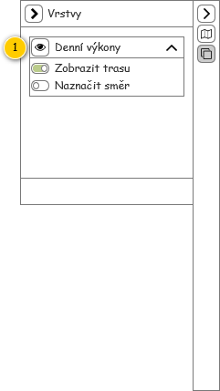

Stručný popis
Mapa pro zobrazení tras Denních výkonů, které jsou načteny v rámci Přehledu denních výkonů. Zobrazeny jsou pak pouze samotné trasy.
Poznámka: Základní zobrazení mapy vychází z jejího obecného popisu.
Uživatelské rozhraní
Rozložení
Drátový diagram

Přehled UI komponent
| Callout | Komponenta | Hodnota |
|---|---|---|
| 1 | Trasa denního výkonu | Entita Denní výkon. Dostupné Denní výkony vychází z těch v Přehledu denních výkonů této obrazovky (tomu odpovídá i pořadí, ve kterém jsou Denní výkony vykreslovány). Vykresleny jsou pak pouze takové Denní výkony, které obsahují alespoň jednu Položku denního výkonu (atribut Položky denního výkonu). Popis toho, jakým způsobem jsou jednotlivé Denní výkony vykresleny, je uveden dále – viz Vykreslení denních výkonů. |
Chování
Vykreslení denních výkonů
Na vstupu mapy pro vykreslení tras Denních výkonů jsou získány takové Denní výkony, které jsou právě zobrazeny v rámci Přehledu denních výkonů stejné obrazovky. Podle nastavení tohoto přehledu jsou pak předány buď všechny obsažené Denní výkony, nebo pouze ty označené. K dispozici je také informace, který Denní výkon byl označen jako poslední.
- Pro všechny Denní výkony, které mají být vykresleny:
- Pokud Denní výkon obsahuje alespoň jednu Položku denního výkonu (atribut Položky denního výkonu):
- Systém vykreslí trasu Denního výkonu, viz Vykreslení trasy denního výkonu. Na vstup jsou pak předány následující informace:
- Denní výkon: právě zkoumaný Denní výkon.
- Barva: v pořadí další barva, viz Barva trasy denního výkonu.
- Zobrazit trasu: viz nástrojová lišta, položka Denní výkony, dílčí nastavení Zobrazení trasy.
- Naznačit směr: viz nástrojová lišta, položka Denní výkony, dílčí nastavení Naznačení směru.
- Systém vykreslí trasu Denního výkonu, viz Vykreslení trasy denního výkonu. Na vstup jsou pak předány následující informace:
- Pokud Denní výkon obsahuje alespoň jednu Položku denního výkonu (atribut Položky denního výkonu):
- Systém zvýrazní trajektorii Denního výkonu, který byl v Přehledu denních výkonů označen jako poslední (zvýraznění je provedeno pomocí bílého orámování trajektorie).
Barva trasy denního výkonu
Jednotlivé trasy Denních výkonů jsou barevně odlišeny, k dispozici je pak množina barev, které se cyklicky opakují (barvy jsou uvedeny samostatně v přehledu použitých barev a ikon). Jejich pořadí je pak pevně dáno:
- Trasa denního výkonu/Pořadí: 1,
- Trasa denního výkonu/Pořadí: 2,
- Trasa denního výkonu/Pořadí: 3,
- Trasa denního výkonu/Pořadí: 4,
- Trasa denního výkonu/Pořadí: 5,
- Trasa denního výkonu/Pořadí: 6,
- Trasa denního výkonu/Pořadí: 7,
- Trasa denního výkonu/Pořadí: 8,
- Trasa denního výkonu/Pořadí: 9,
- Trasa denního výkonu/Pořadí: 10.
Při prvním požadavku na získání barvy je tedy předána ta v pořadí první, následně druhá a podobně. Pokud je předána poslední uvedená barva, při dalším požadavku na získání barvy je opět předána ta v pořadí první.
Vykreslení trasy denního výkonu
Na vstupu algoritmu pro vykreslení trasy Denního výkonu jsou získány následující informace:
- Denní výkon, který má být vykreslen.
- Barva, kterou má být trasa Denního výkonu vykreslena.
- Zobrazit trasu – informace, zda má být vykreslena skutečná trasa (TRUE) nebo pouze spojnice (FALSE).
- Naznačit směr – informace, zda má být naznačen směr.
Postup se pak liší podle toho, zda má být vykreslena skutečná trasa, nebo pouze přímé spojnice – viz vstupní parametr Zobrazit trasu:
Vykreslení trasy denního výkonu – trasa
V tomto případě jsou vykresleny trasy kopírující pozemní komunikace – postup je následující.
- Systém vykreslí Položku denního výkonu představující start Denního výkonu (atribut Počáteční položka denního výkonu), viz Vykreslení položky denního výkonu. Na vstup jsou pak předány následující informace:
- Položka denního výkonu: právě zkoumaná Položka denního výkonu.
- Barva: hodnota parametru Barva získaná na vstupu.
- Naznačit směr: hodnota parametru Naznačit směr získaná na vstupu.
- Pro všechny Položky denního výkonu obsažené v rámci Denního výkonu (atribut Položky denního výkonu):
- Systém vykreslí právě zkoumanou Položku denního výkonu, viz Vykreslení položky denního výkonu. Na vstup jsou pak předány následující informace:
- Položka denního výkonu: právě zkoumaná Položka denního výkonu.
- Barva: hodnota parametru Barva získaná na vstupu.
- Naznačit směr: hodnota parametru Naznačit směr získaná na vstupu.
- Systém vykreslí právě zkoumanou Položku denního výkonu, viz Vykreslení položky denního výkonu. Na vstup jsou pak předány následující informace:
Poznámka: Položka denního výkonu představující cíl nemusí být vykreslena, neobsahuje žádnou další část trasy.
Vykreslení položky denního výkonu
Na vstupu algoritmu pro vykreslení trasy Položky denního výkonu jsou získány následující informace:
- Položka denního výkonu, který má být vykreslen.
- Barva, kterou má být trasa Položky denního výkonu vykreslena.
- Naznačit směr – informace, zda má být naznačen směr.
Postup je pak následující:
- Pokud je k dispozici Lokace objednané služby (atribut Lokace objednané služby entity Položka denního výkonu):
- Systém vykreslí trasu do další Lokace objednané služby (atribut Trasa do další lokace právě zkoumané Lokace objednané služby), viz Vykreslení lokace objednané služby. Na vstup jsou pak předány následující informace:
- Lokace objednané služby: právě zkoumaná Lokace objednané služby.
- Barva: hodnota parametru Barva získaná na vstupu.
- Naznačit směr: hodnota parametru Naznačit směr získaná na vstupu.
- Systém vykreslí trasu do další Lokace objednané služby (atribut Trasa do další lokace právě zkoumané Lokace objednané služby), viz Vykreslení lokace objednané služby. Na vstup jsou pak předány následující informace:
- Jinak je vykreslena trasa obsažené Objednané služby (atribut Objednaná služba entity Položka denního výkonu):
- Pro všechny Lokace objednané služby obsažené v rámci Objednané služby (atribut Lokace objednané služby):
- Systém vykreslí trasu do další Lokace objednané služby (atribut Trasa do další lokace právě zkoumané Lokace objednané služby), viz Vykreslení lokace objednané služby. Na vstup jsou pak předány následující informace:
- Lokace objednané služby: právě zkoumaná Lokace objednané služby.
- Barva: hodnota parametru Barva získaná na vstupu.
- Naznačit směr: hodnota parametru Naznačit směr získaná na vstupu.
- Systém vykreslí trasu do další Lokace objednané služby (atribut Trasa do další lokace právě zkoumané Lokace objednané služby), viz Vykreslení lokace objednané služby. Na vstup jsou pak předány následující informace:
- Pro všechny Lokace objednané služby obsažené v rámci Objednané služby (atribut Lokace objednané služby):
Poznámka: V některých případech může být k dispozici jak Objednaná služba, tak Lokace objednané služby. V takovém případě je konkrétní trasa obsažena právě v Lokaci objednané služby.
Vykreslení lokace objednané služby
Na vstupu algoritmu pro vykreslení trasy z Lokace objednané služby jsou získány následující informace:
- Lokace objednané služby, z které je trasa vykreslena.
- Barva, kterou má být trasa z Lokace objednané služby vykreslena.
- Naznačit směr – informace, zda má být naznačen směr.
Postup je pak následující:
- Pokud má být trasa z Lokace objednané služby získané na vstupu vykreslena – hodnota atributů Platná a Provést je rovna TRUE:
- Systém vykreslí trasu z Lokace objednané služby získané na vstupu UC (atribut Trasa do další lokace) následovně:
- Barva je získaná na vstupu.
- Pokud je hodnota parametru Naznačit směr, která je získána na vstupu, rovna TRUE, je naznačen směr.
- Systém vykreslí trasu z Lokace objednané služby získané na vstupu UC (atribut Trasa do další lokace) následovně:
Vykreslení trasy denního výkonu – spojnice
V tomto případě jsou vykresleny přímé spojnice – postup je následující.
- Systém připraví pomocné proměnné obsahující souřadnice pro získání krajních bodů pro vykreslení spojnice:
- Bod1: výchozí hodnota je nastavena na NULL.
- Bod2: výchozí hodnota je nastavena na NULL.
- Systém nastaví počáteční bod představující start Denního výkonu:
- Bod1: atribut Souřadnice entity Lokace objednané služby – atribut Lokace objednané služby entity Položka denního výkonu – atribut Počáteční položka denního výkonu entity Denní výkon.
- Pro všechny obsažené Položky denního výkonu (atribut Položky denního výkonu entity Denní výkon):
- Pokud je k dispozici Lokace objednané služby (atribut Lokace objednané služby entity Položka denního výkonu):
- Systém nastaví následující bod trasy – Bod2: atribut Souřadnice entity Lokace objednané služby (poznámka: v tomto případě je Lokace objednané služby obsloužena vždy).
- Systém vykreslí spojnici mezi pomocnými body – viz Vykreslení spojnice lokací objednané služby, na vstup jsou předány následující hodnoty (poznámka: provede aktualizaci pomocných souřadnic):
- Počáteční bod: Bod1.
- Koncový bod: Bod2.
- Barva: hodnota parametru Barva získaná na vstupu.
- Naznačit směr: hodnota parametru Naznačit směr získaná na vstupu.
- Jinak je vykreslena trasa obsažené Objednané služby (atribut Objednaná služba entity Položka denního výkonu):
- Pro všechny obsažené Lokace objednané služby (atribut Lokace objednané služby entity Objednaná služba), která mají být obslouženy (hodnota atributů Platná a Provést nabývá TRUE):
- Systém nastaví následující bod trasy – Bod2: atribut Souřadnice entity Lokace objednané služby, která je právě zkoumána.
- Systém vykreslí spojnici mezi pomocnými body – viz Vykreslení spojnice lokací objednané služby, na vstup jsou předány následující hodnoty (poznámka: provede aktualizaci pomocných souřadnic):
- Počáteční bod: Bod1.
- Koncový bod: Bod2.
- Barva: hodnota parametru Barva získaná na vstupu.
- Naznačit směr: hodnota parametru Naznačit směr získaná na vstupu.
- Pro všechny obsažené Lokace objednané služby (atribut Lokace objednané služby entity Objednaná služba), která mají být obslouženy (hodnota atributů Platná a Provést nabývá TRUE):
- Pokud je k dispozici Lokace objednané služby (atribut Lokace objednané služby entity Položka denního výkonu):
- Systém nastaví koncový bod představující cíl Denního výkonu:
- Bod2: atribut Souřadnice entity Lokace objednané služby – atribut Lokace objednané služby entity Položka denního výkonu – atribut Koncová položka denního výkonu entity Denní výkon.
- Bod2: atribut Souřadnice entity Lokace objednané služby – atribut Lokace objednané služby entity Položka denního výkonu – atribut Koncová položka denního výkonu entity Denní výkon.
- Systém vykreslí spojnici mezi pomocnými body – viz Vykreslení spojnice lokací objednané služby, na vstup jsou předány následující hodnoty (poznámka: provede aktualizaci pomocných souřadnic):
- Počáteční bod: Bod1.
- Koncový bod: Bod2.
- Barva: hodnota parametru Barva získaná na vstupu.
- Naznačit směr: hodnota parametru Naznačit směr získaná na vstupu.
Vykreslení spojnice lokací objednané služby
Na vstupu algoritmu pro vykreslení trasy spojnic Lokací objednané služby jsou získány následující informace:
- Počáteční bod – souřadnice počátečního bodu spojnice.
- Koncový bod – souřadnice koncového bodu spojnice.
- Barva, kterou má být spojnice vykreslena.
- Naznačit směr – informace, zda má být naznačen směr.
Postup je pak následující:
- Systém vykreslí spojnice mezi body získanými na vstupu (Počáteční bod, Koncový bod) následovně:
- Barva je získaná na vstupu.
- Pokud je hodnota parametru Naznačit směr, která je získána na vstupu, rovna TRUE, je naznačen směr.
- Systém aktualizuje body získané na vstupu (projeví se i v rámci algoritmů, které tento tok událostí volají):
- Počáteční bod: Koncový bod.
- Koncový bod: NULL.
Interakce
V rámci mapy jsou dostupné pouze základní interakce:
- Pokud uživatel najede myší na konkrétní trasu Denního výkonu, je zobrazena bublinková nápověda obsahující text zobrazený v Přehledu denních výkonů stejné obrazovky v rámci Panelu vozidla, položka Identifikace vozidla.
- Pokud uživatel klikne levým tlačítkem myši na konkrétní trasu Denního výkonu, dojde k označení odpovídajícího Denního výkonu v rámci Přehledu denních výkonů stejné obrazovky (trasa označeného Denního výkonu je v mapě zvýrazněna). Označení více Denních výkonů v rámci mapy není umožněno.
Nástrojová lišta
Nástrojová lišta mapy vychází z jejího obecného popisu. Navíc je doplněna o možnost rozšířeného nastavení, které je k dispozici ve skupině Vrstvy této nástrojové lišty.
Drátový diagram

Přehled UI komponent
| Callout | Nadpis | Typ položky | Popis | Výchozí hodnota | Další možná nastavení | Chování | Poznámka |
|---|---|---|---|---|---|---|---|
| 1 | Denní výkony | Rozšířená | Slouží k zobrazení/skrytí plánované stopy obsažených Denních výkonů. Dále je možné změnit nastavení jednotlivých spojnic. | TRUE: je zobrazena vrstva. | Zobrazení trasy:
Naznačení směru:
| Změna provede nastavení odpovídajících vrstev. | – |
Grafický návrh
Revize
20. 11. 2019: Tomáš Nadrchal
| Odkaz | Stručný popis změny/doplnění |
|---|---|
| Vykreslení denních výkonů | Doplněn popis pro zvýraznění Denních výkonů (naznačeno modře). |
| Barva trasy denního výkonu | Aktualizována paleta použitých barev. |